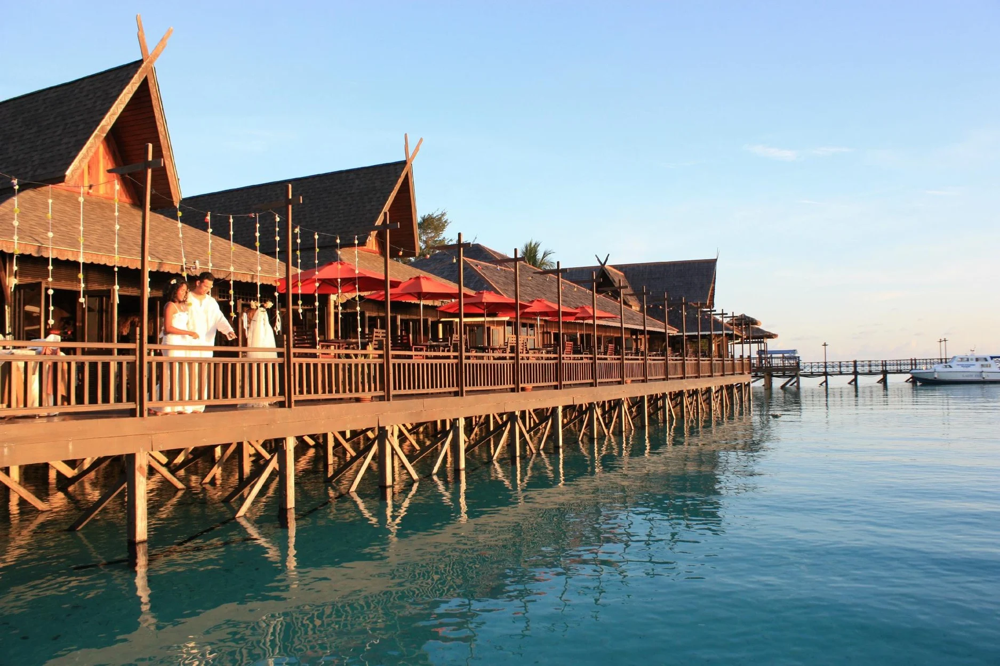

Introduction

Semporna is a town on the island of Borneo, in the Malaysian state of Sabah. It’s the gateway to Tun Sakaran Marine Park, a group of 8 islands with dive sites on the Kapikan and Church reefs. Bodgaya Lagoon is home to eagle rays and barracudas. On Bohey Dulang Island, the rocky Bohey Dulang Nature Trail has panoramic views. Hawksbill and green turtles hatch their eggs on the biodiverse Pom Pom Island.
Highlights of Bukit Tengkorak

Semporna Blue Reef
Lotak

Kima
Sagol
Koling